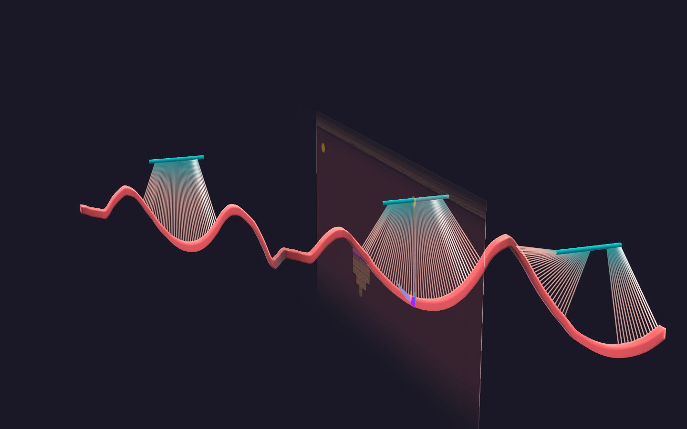

// INTRODUCTION
// DEVLOG — MECHANIC DIARY
1 ENTRIES
Momentum ve Hassasiyetin Dansı
Kinematik fizik altyapısı, tasarım felsefesi ve State Pattern mimarisi — Slingshot'ın temelleri üzerine.
NEXT ENTRY LOADING█
